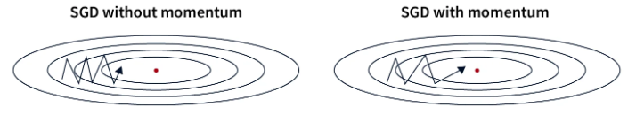

理解不同的优化器#
在第一课中，我们介绍了梯度下降法，这是训练深度学习模型最简单的优化器。然后，我们根据不同的场景使用了基于mini-batch的随机梯度下降法或Adam。
优化器在训练过程中调整模型参数以最小化损失。选择一个好的优化器会影响模型的性能和收敛速度。
本课程介绍了现有的不同优化器（非全面列表）及其优缺点。在实际应用中，Adam通常是最佳选择，但您可以测试其他优化器和不同的学习率值（最佳值取决于所选优化器）。
本课程参考了这篇博客文章的解释，并重新使用了图表。
梯度下降法#
让我们回顾一下梯度下降算法。可以通过以下方程简单定义它： \(\theta = \theta - \alpha \cdot \nabla L(\theta)\) 其中，\(\theta\)表示模型参数，\(L(\theta)\)表示数据集上的损失，\(\alpha\)表示学习率。
概括来说，在每个训练步骤中，我们调整模型参数以最小化数据集上的损失。
以下图表说明了梯度下降的基本原理：

这种方法实现简单，如果学习率选择得当，在小数据集上表现良好。然而，由于在调整权重之前需要计算整个数据集上的损失，这种方法在大数据集上非常缓慢，并不适用于实际应用。此外，学习率的选择至关重要且必须精确，这并不总是容易做到。
随机梯度下降法#
这种方法将梯度下降法适应于大型数据集。与处理所有数据后再修改参数不同，我们计算数据的一部分（mini-batch）上的损失，并根据该损失调整权重。因此，我们称之为随机方法：调整是在数据的一部分上进行的，这可能不会总是减少全局损失。在实际应用中，经过多次迭代后，全局损失会减少，模型收敛得更快。
公式几乎相同： \(\theta = \theta - \alpha \cdot \nabla L(\theta;x^{(i)};y^{(i)})\) 其中，\((x^{(i)},y^{(i)})\)表示一个mini-batch的数据。

如图所示，斜率不是一条直线，但模型最终会收敛到全局最小值。
这种方法比经典的梯度下降法快得多，尤其是在大型数据集上。它还能通过过程的不稳定性更轻松地避免局部最小值。然而，这种不稳定性需要选择良好的学习率才能达到最佳效果。
带动量的随机梯度下降法#
这种优化器在随机梯度下降法的基础上增加了动量项。如其名所示，该项可记住前一次优化的方向，并推动当前优化继续沿相同方向进行。该项通过指数衰减平均值计算和更新。这对于解决弱梯度问题（平坦区域）非常有用。
公式如下： \(v = \beta \cdot v + (1 - \beta) \cdot \nabla_\theta L(\theta; x^{(i)}; y^{(i)})\) \(\theta = \theta - \alpha \cdot v\) 其中，\(v\)是动量向量，\(\beta\)是一个超参数（通过指数衰减平均值计算），用于调整当前值的影响。

在实际应用中，这有助于更有效地穿过损失函数的平坦区域，同时提高收敛速度。然而，动量参数的选择很重要，因为过大的动量可能会使我们跳过最优解。在实际应用中，该项根据mini-batch的大小（batch size）进行选择。
指数衰减平均值：一种数据平滑方法，其中每个新值具有指数衰减的权重，使得最近的值更重要，同时逐渐减少过去值的影响。
Adagrad#
Adagrad是一种在训练过程中根据参数调整学习率的优化器。每个参数的学习率基于梯度的历史。其思想是，频繁调整的参数将具有比较少调整的参数更小的学习率。
公式如下： \(g = \nabla_\theta L(\theta; x^{(i)}; y^{(i)})\) \(G = G + g \odot g\) \(\theta = \theta - \frac{\alpha}{\sqrt{G + \epsilon}} \odot g\) 其中，\(G\)是累积梯度平方的矩阵（以避免负值），\(\epsilon\)是一个小值以避免除以零。
这种方法在训练数据差异很大时表现良好，因为它根据参数的出现频率进行调整。然而，学习率持续减小，这可能导致收敛非常缓慢，甚至在优化结束前学习率过小导致不收敛。
RMSProp#
RMSProp基于与Adagrad相同的思想，但纠正了Adagrad的一些缺点。与在训练过程中逐渐减小学习率不同，RMSProp在梯度平方上使用指数衰减平均值，而Adagrad则对其进行求和。这纠正了Adagrad的主要问题，即学习率持续减小且无法回退。
RMSProp的公式如下： \(g = \nabla_\theta L(\theta; x^{(i)}; y^{(i)})\) \(G = \beta \cdot G + (1 - \beta) \cdot g \odot g\) \(\theta = \theta - \frac{\alpha}{\sqrt{G + \epsilon}} \odot g\) 其中，\(\beta\)是用于管理指数衰减平均值的参数。
与Adagrad相比，优点相同，但收敛速度更快。然而，有时这仍然不够，收敛仍然过于缓慢。
AdaDelta#
AdaDelta是一种与RMSProp非常相似的优化器，但它不需要学习率作为超参数。为了弥补这一点，AdaDelta在梯度和梯度平方上使用指数衰减平均值，以确定一个一致的调整值。
AdaDelta的公式如下： \(g = \nabla_\theta L(\theta; x^{(i)}; y^{(i)})\) \(G = \beta \cdot G + (1 - \beta) \cdot g \odot g\) \(\Delta\theta = - \frac{\sqrt{S + \epsilon}}{\sqrt{G + \epsilon} } \odot g\) \(S = \beta \cdot S + (1 - \beta) \cdot \Delta\theta \odot \Delta\theta\) \(\theta = \theta + \Delta\theta\) 其中，\(G\)是累积梯度的矩阵，\(S\)是累积调整平方的矩阵。
这种方法很有趣，因为它不需要选择学习率。然而，它可能收敛缓慢，并且计算出的学习率可能变得过小，导致训练停止。
Adam#
Adam可能是今天最常用的优化器。它结合了带动量的梯度下降法和RMSProp的思想。Adam在梯度和梯度平方上使用指数衰减平均值来调整学习率，如RMSProp所示。它还计算动量以加速优化。
公式如下： \(g = \nabla_\theta L(\theta; x^{(i)}; y^{(i)})\) \(m = \beta_1 \cdot m + (1 - \beta_1) \cdot g\) \(v = \beta_2 \cdot v + (1 - \beta_2) \cdot g \odot g\) \(\hat{m} = \frac{m}{1 - \beta_1^t}\) \(\hat{v} = \frac{v}{1 - \beta_2^t}\) \(\theta = \theta - \frac{\alpha}{\sqrt{\hat{v}} + \epsilon} \odot \hat{m}\) 其中，\(m\)是动量向量，\(v\)是速度向量，\(\beta_1\)是动量的衰减率，\(\beta_2\)是速度的衰减率。
这是最快的收敛优化器，并且在噪声数据上表现良好。然而，它需要定义三个超参数，这可能有点繁重。
在实际应用中，Adam表现极佳，通常只需要修改学习率参数。\(\beta_1\)和\(\beta_2\)的默认值很少需要修改（在PyTorch中，默认值为\(\beta_1=0.9\)和\(\beta_2=0.999\)）。此外，与随机梯度下降法不同，精确选择学习率并非获得良好优化所必需。
注意：一般来说，我建议使用Adam或AdamW（Adam的改进版本）作为默认优化器。根据您的问题，您可能需要测试其他优化器。
另一个注意：根据所选优化器，模型训练时所需的内存空间会有所不同。在大型模型如LLM普遍存在的今天，这是一个需要记住的信息。以下是根据优化器的内存成本的几个指示（\(n\)是模型参数的数量）：
内存成本n：随机梯度下降法（SGD）
内存成本2n：带动量的SGD、Adagrad、RMSProp
内存成本3n：Adam及其变体（AdamW、AdaMax、Nadam）
关于学习率选择的注意事项#
学习率的选择与优化器的选择密切相关。以下是根据学习率选择可能出现的情况：

在第一种情况下，学习率过低，导致模型收敛缓慢。这在时间和资源上都是昂贵的。
在第二种情况下，学习率选择得当，足够快地减小以达到损失函数的最小值。这是我们要寻找的值。
在最后一种情况下，学习率过高，导致参数调整过大。这可能导致不收敛，甚至模型发散。
这些考虑对于使用随机梯度下降法时选择学习率至关重要。对于Adam，这是一个重要的超参数，但误差容忍度更大，因为学习率在优化器中被调整。